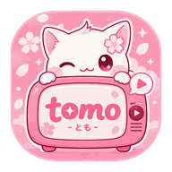

tomo
とも · your anime companion
Let Tomo pick your next anime ✨
Use AniList-powered discovery now. Your personal AniList login and backlog roulette are the next milestone.
SMART RANDOMIZER
Tell Tomo what you want
DISCOVER
Trending on AniList
Loading anime…
COMING NEXT
Connect your AniList account
Once connected, Tomo can use your Watching, Completed, Planning, Paused and Dropped lists for personal randomizers and stats.